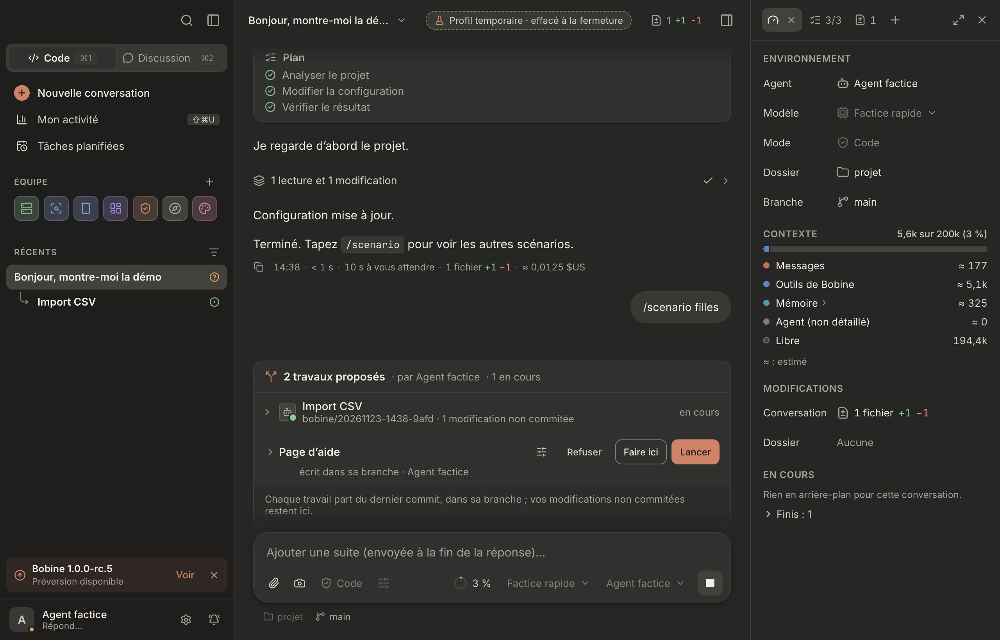
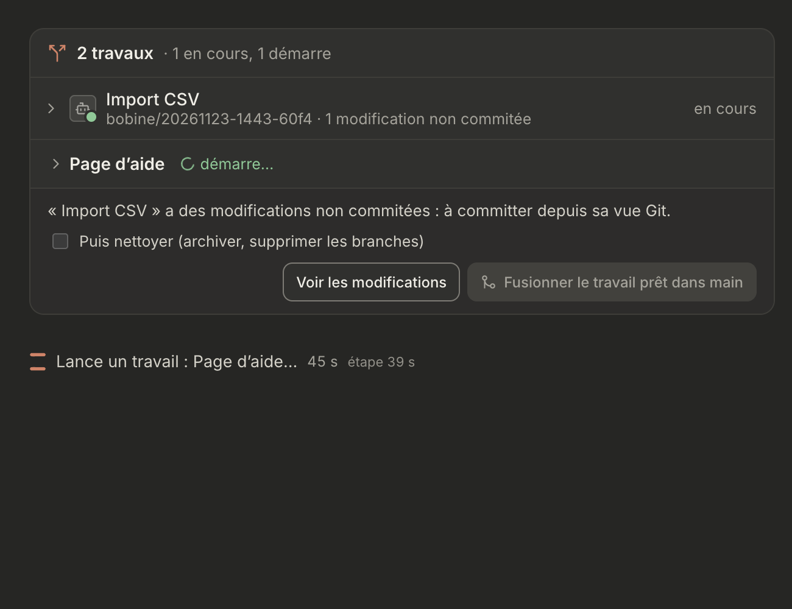
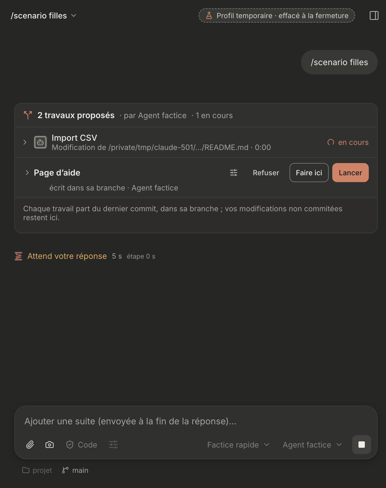

Défaut trouvé en recette avant la 1.0.0-rc.4. Un travail a répondu pendant que la
conversation d’origine répond encore : sa réponse lui sera remise à la fin de cette
réponse (état pending de workState). La carte de travaux le
compte « en cours » (STATE_KEYS.pending →
workGroup.state.running, ligne sans roue ; groupCounts le
range avec running), alors que la barre latérale dit « Réponse d’un travail
à lire » et le panneau « Finis : 1 ». Deux variantes de libellé, la recommandée en
premier ; puis le chemin absolu montré dans la ligne au démarrage. Rien n’est codé.


Pour l’utilisateur, le travail a répondu : la ligne le dit comme pour tout travail fini («
a répondu », en vert), l’en-tête le compte dans « 1 a répondu ». Ce qui reste propre à cet
état — la réponse n’est pas encore remise à l’agent — est dit là où il y a la place : en
infobulle de l’état et dans la ligne dépliée, avec le texte qui existe déjà
(workCard.pendingLine). Aucune nouvelle clé.
STATE_KEYS.pending → workGroup.state.replied (même
couleur que replied) ; dans groupCounts, pending
passe de « en cours » à « a répondu ».
Un libellé propre à l’état : la ligne dit « réponse en attente », l’en-tête « 1 réponse en attente ». Plus précis, mais une clé de plus par endroit.
workGroup.merge.row.pending
: « en attente » d’être fusionné) ; la barre latérale et le panneau, eux, disent « à
lire » et « Finis » : trois mots pour un même état.

Proposé : dans l’activité d’une ligne (useWorkActivity → méta de
WorkGroupRow), un chemin sous le dossier du travail s’écrit relatif à ce
dossier : « Modification de README.md » ; un chemin hors de ce dossier garde
~ pour le dossier personnel. Le chemin complet reste en infobulle. Le texte
vient de l’agent (non traduit) : seul le préfixe du dossier est retiré, rien n’est
réécrit.
| Endroit | Avant | 1 (recommandée) | 2 |
|---|---|---|---|
| Ligne | en cours / working | a répondu / replied (clé existante) | réponse en attente / response queued (nouvelle) |
| En-tête | 1 en cours / 1 working | 1 a répondu / 1 replied (existante) | 1 réponse en attente / 1 response queued ; 2 réponses en attente / 2 responses queued (nouvelle) |
| Infobulle de l’état, ligne dépliée | — | Sa réponse s’affichera à la fin de la réponse de {{agent}}. / Its response will show when {{agent}}’s response ends. (existante) | |
| Barre latérale (inchangée) | Réponse d’un travail à lire / Unread task response | ||
| Panneau (inchangé) | Finis : 1 / Finished: 1 | ||
| Méta au démarrage | Modification de /private/tmp/…/README.md | Modification de README.md (chemin complet en infobulle) | |